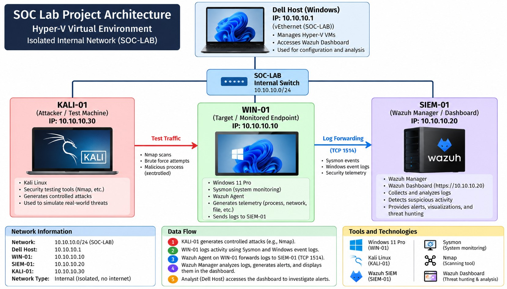

SOC Home Lab
Built a virtual SOC environment using Hyper-V, Wazuh SIEM, Sysmon, Windows 11, and Kali Linux. Log collection is configured, with detection testing and investigation exercises in progress.
Building a more secure digital world through hands-on cybersecurity projects, security monitoring, continuous learning, and a passion for threat detection.
I'm Natnael Haile, an Information Technology student concentrating in Cybersecurity at George Mason University. My goal is to build a career as a Security Operations Center (SOC) Analyst.
I'm developing practical security monitoring and investigation skills through a home lab using Hyper-V, Wazuh SIEM, Sysmon, Windows, and Kali Linux.
My professional experience at Amazon has strengthened my leadership, data analysis, communication, and problem-solving abilities.
Built a virtual SOC environment using Hyper-V, Wazuh SIEM, Sysmon, Windows 11, and Kali Linux. Log collection is configured, with detection testing and investigation exercises in progress.

A dedicated project exploring vulnerability identification, security weaknesses, risk prioritization, and mitigation recommendations.

Investigation techniques for suspicious emails, sender information, malicious links, and potential indicators of compromise.
Evaluating system security controls using CIS Benchmarks, STIG guidance, and OWASP security recommendations.
A MySQL-based registration project featuring client records, class check-ins, database views, and stored procedures.
Explore three investigation workflows being developed within my virtual SOC environment.
Isolated Hyper-V SOC-LAB network: 10.10.10.0/24. WIN-01 (10.10.10.10), SIEM-01 (10.10.10.20), and KALI-01 (10.10.10.30).

Detailed evidence and screenshots will be added as documentation is completed.

Career progression from Associate to Process Assistant to Area Manager.
B.S. Information Technology
Concentration: Cybersecurity
Expected Graduation: December 2026
GPA: 3.76
I'm open to discussing cybersecurity opportunities, SOC projects, and professional connections.